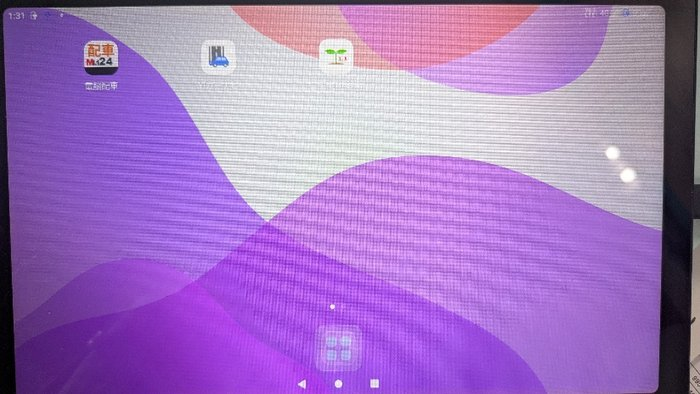
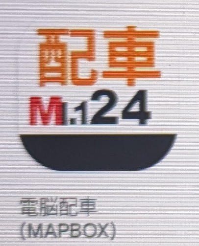
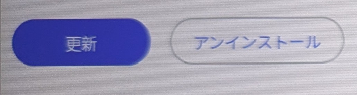
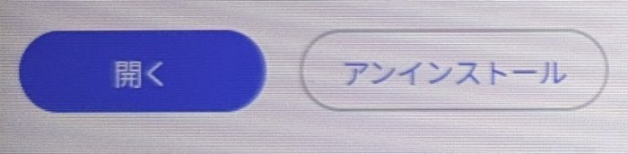

雨雲レーダー（岐阜市周辺）
実況・リアルタイム
ニュース・防災情報
自動更新
本日の営業情報 ─ 年金支給日
需要予測・気象庁データ自動更新
--:--
時間帯を判定中…
🕐 主要施設「人が出る時間」一覧
🏥
岐阜市民病院受付 月〜金 8:00〜11:00 ／ 土日祝 休診
帰り客 ⏰11〜13時頃
🏥
県総合医療センター・岐阜大学病院午前外来中心
帰り客 ⏰昼前後
🛒
マーサ21専門店10:00〜21:00 ／ イオン9:00〜21:00 ／ 年中無休
買い物帰り ⏰15〜18時
🚉
JR岐阜駅・名鉄岐阜駅通勤・出張・流し客
⏰朝夕・終電後
🍽
柳ヶ瀬・玉宮町（飲食街）夜の繁華街
⏰21時〜終電後
♨
長良川温泉旅館の送迎・チェックイン/アウト
⏰15時 / 10時
☀ 午前の需要
天気情報を取得しています...
🌆 午後の需要・注意
💡 今日の「営業のひとこと」
🎣 長良川鵜飼（5/11〜10/15）
点呼情報・業務連絡
20秒ごと自動切替
📱
電脳交通アプリ 更新手順
前半 ①〜③
1ホーム画面で記号をタップ

画面下中央の ⊞マーク をタップ → アプリ一覧が開きます
2Playストアをタップ
アプリ一覧から Playストア を開きます
3電脳配車をタップ

アプリ一覧が出るので 電脳配車(MAPBOX) を選択
📱
電脳交通アプリ 更新手順
後半 ④〜⑤
4「更新」をタップ

青い 「更新」 ボタンを押すとアップデート開始
5「開く」に変われば完了

完了すると 「開く」 に変わります
💡 最初から「開く」と表示されていれば、すでに最新です（操作不要）。
🆕 更新でこんなに便利に（Ver1.124以上）
待機所・行き先選択で親項目（▼〇〇市など）を選んだ後、「戻る」をタップすれば1ページ目に戻れます。
待機所・行き先選択で親項目（▼〇〇市など）を選んだ後、「戻る」をタップすれば1ページ目に戻れます。